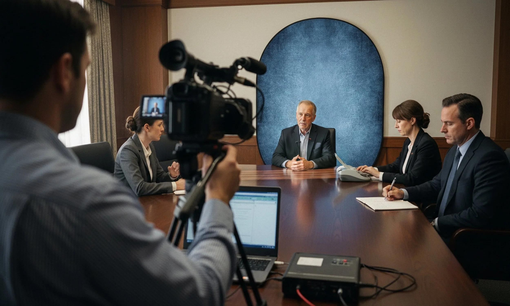
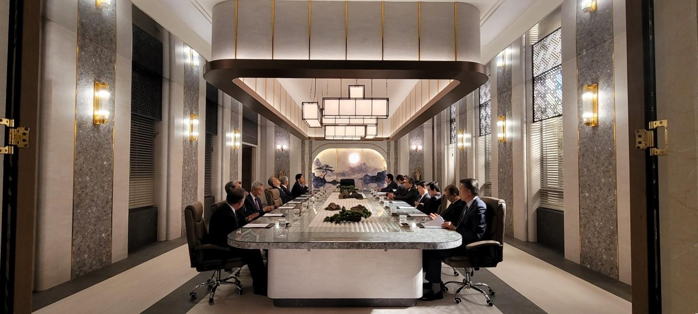

Court Reporting
Highly qualified, certified court reporters for all venues including trials, hearings, and arbitrations. Available nationwide with rigorous quality control.
View DetailsLegal Transcription
Conversion of audio and video recordings into certified, verbatim transcripts. Secure processing of evidence with rapid turnaround options.
View Details
Deposition Services
Complete management of depositions including scheduling, venue coordination, real-time reporting, and certified final transcripts.
View DetailsArbitration & Mediation
Neutral reporting services for dispute resolution proceedings. Experienced reporters who understand the nuances of alternative dispute resolution.
View Details
Video Transcripts
High-definition legal videography synchronized with written transcripts for powerful courtroom presentation and impeachment.
View Details
Corporate Meetings
Discreet, confidential transcription of board meetings, shareholder events, and executive strategy sessions.
View Details